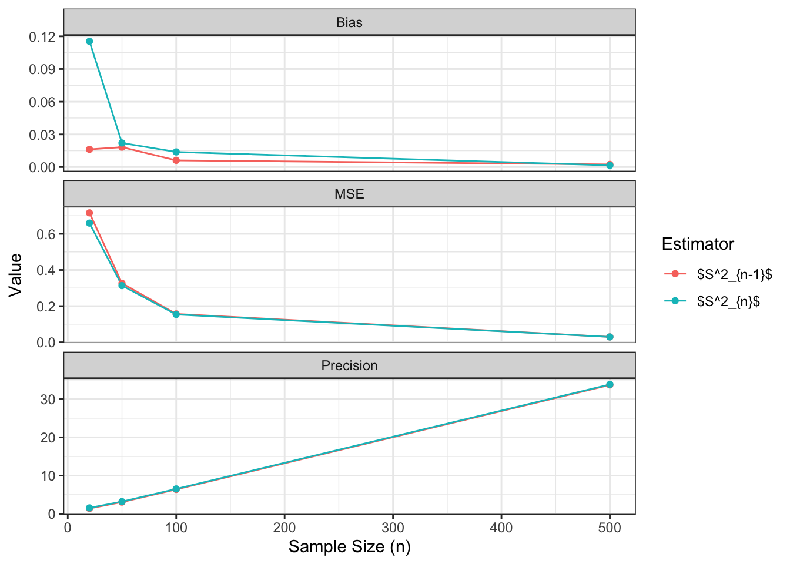

Complete the tasks below. Make sure to start your solutions in on a new line that starts with “Solution:”.
Make sure to use the Quarto Cheatsheet. This will make completing and writing up the lab much easier.
Make sure to use “enter” to make your code readable, so it doesn’t run off the page. I switched the Quarto document to automatically render to .pdf, so you can see what you’re submitting by default. You can switch back for the highlighting by moving the html block above the pdf block in the YAML header.
Don’t forget that you can copy-and-paste code when you’re doing something similar as we did in class!
Make sure to plot all computed probabilities. This is good ggplot practice AND will help make sure you don’t make a mistake when computing the probability.
1 Introduction
When performing point estimation, there isn’t just one right answer. For example, the Method of Moments (MOM) and Maximum Likelihood Estimates (MLEs) aren’t always the same.
One question that comes up, is why we calculate the sample variance as \[S_{n-1}^2 = \frac{1}{n-1} \sum_{i=1}^n (X_i -\bar{X})^2,\] when it is supposed to be the ``average squared distance from the mean, i.e., \[S_n^2 = \frac{1}{n} \sum_{i=1}^n (X_i -\bar{X})^2.\]
2 Comparing Estimators
2.1 Initial Simulation
In this lab, we will explore why we use \(S_{n-1}^2\) and not \(S_n^2\). To do this, we will generate data from four known distributions:
Remark: Note that I have selected the parameters so that the true variance for all four models is 2.
For each distribution, write a loop that completes the following 1000 times. Put set.seed(7272) at the top of your code chunk.
Generate a sample of size \(n\) from the distribution.
Calculate and save \(S_{n-1}^2\) and \(S_n^2.\)
Start with \(n=20\). Is there evidence that \(S_{n-1}^2\) is a better estimator than \(S_n^2\)?
Create a plot or combination of plots (using patchwork) to show the results across all four distributions. Make sure to create a corresponding table that numerically summarizes the results of the simulation. You should include \[\begin{align*}
\textrm{Bias} &= \textrm{Average of Estimates} - \textrm{True Value}\\
\textrm{Precision} &= \frac{1}{\textrm{Variance of Estimates}}\\
\textrm{Mean Square Error} &= \textrm{Bias}^2 + \textrm{Variance of Estimates}.
\end{align*}\]
Solution
Code
set.seed(7272)n =20# Poisson:pois =c(0)Sn1p =c(0) Sn0p =c(0)for(i in1:1000){ rand =rpois(n = n, lambda =2) mean =mean(rand) Sn1p[i] =var(rand) Sn0p[i] = ((n-1)/n)*var(rand) }# Binomial:binom =c(0)Sn1b =c(0)Sn0b =c(0)p = (5-sqrt(21))/10for(i in1:1000){ rand =rbinom(n = n, size =50, prob = p) mean =mean(rand) Sn1b[i] =var(rand) Sn0b[i] = ((n-1)/n)*var(rand) }# Normal:normal =c(0)Sn1n =c(0)Sn0n =c(0)for(i in1:1000){ rand =rnorm(n = n, mean =0, sd =sqrt(2)) mean =mean(rand) Sn1n[i] =var(rand) Sn0n[i] = ((n-1)/n)*var(rand) }# Exponential:exp =c(0)Sn1e =c(0)Sn0e =c(0)p = (5-sqrt(21))/10for(i in1:1000){ rand =rexp(n = n, rate =1/sqrt(2)) mean =mean(rand) Sn1e[i] =var(rand) Sn0e[i] = ((n-1)/n)*var(rand) }
I considered making a table to show the average bias, precision, and MSE across all sistributions for each estimator, but it really isn’t necessary. In each case, both the bias and the MSE is lower for the \(S^2_{n-1}\) estimator than for \(S^2_{n}\). Clearly, the \(S^2_{n-1}\) estimator is better for these distributions. It isn’t better by a wildly large amount, but it is always better. The one thing to note is that it is also consistently less precise. We almost always tend to favor unbiased estimators over a slight precision benefit, though, so I am still convinced that \(S^2_{n-1}\) is better.
2.2 Simulation over various sample sizes
Consider the effect of the sample size have on these results. Provide a graphical and numerical summary of what happens as \(n\) increases – say \(n=20\), \(n=50\), \(n=100\), and \(n=500\). Does the result in your initial simulation hold across samples? Or, do things change as the sample size changes? Ensure to set your randomization seed.
Solution
Code
set.seed(7272)huge.func =function(n){# Poisson:pois =c(0)Sn1p =c(0) Sn0p =c(0)for(i in1:1000){ rand =rpois(n = n, lambda =2) mean =mean(rand) Sn1p[i] =var(rand) Sn0p[i] = ((n-1)/n)*var(rand) }# Binomial:binom =c(0)Sn1b =c(0)Sn0b =c(0)p = (5-sqrt(21))/10for(i in1:1000){ rand =rbinom(n = n, size =50, prob = p) mean =mean(rand) Sn1b[i] =var(rand) Sn0b[i] = ((n-1)/n)*var(rand) }# Normal:normal =c(0)Sn1n =c(0)Sn0n =c(0)for(i in1:1000){ rand =rnorm(n = n, mean =0, sd =sqrt(2)) mean =mean(rand) Sn1n[i] =var(rand) Sn0n[i] = ((n-1)/n)*var(rand) }# Exponential:exp =c(0)Sn1e =c(0)Sn0e =c(0)p = (5-sqrt(21))/10for(i in1:1000){ rand =rexp(n = n, rate =1/sqrt(2)) mean =mean(rand) Sn1e[i] =var(rand) Sn0e[i] = ((n-1)/n)*var(rand) }return(tibble(Sn1 =c(Sn1p, Sn1b, Sn1n, Sn1e),Sn0 =c(Sn0p, Sn0b, Sn0n, Sn0e),Distribution =rep(c("Poisson", "Binomial", "Normal", "Exponential"), each =1000),n = n ))}
Table 2: Summary of Sample Size Effect on Estimators
Estimator
n
Bias
Precision
MSE
\(S^2_{n-1}\)
20
-0.016
1.397
0.716
\(S^2_{n-1}\)
50
0.018
3.067
0.326
\(S^2_{n-1}\)
100
0.006
6.380
0.157
\(S^2_{n-1}\)
500
0.002
33.706
0.030
\(S^2_{n}\)
20
-0.115
1.548
0.659
\(S^2_{n}\)
50
-0.022
3.193
0.314
\(S^2_{n}\)
100
-0.014
6.509
0.154
\(S^2_{n}\)
500
-0.002
33.842
0.030
Code
data |>group_by(Estimator, n) |>summarise(Bias =abs(mean(Estimate) -2),Precision =1/var(Estimate),MSE = Bias^2+var(Estimate) ) |>pivot_longer(c(Bias, Precision, MSE), names_to ="Metric", values_to ="Value") |>ggplot(aes(x = n, y = Value, color = Estimator)) +geom_line() +geom_point() +facet_wrap(~ Metric, scales ="free_y", ncol =1) +theme_bw() +labs(x ="Sample Size (n)", y ="Value", color ="Estimator")
Figure 3: Metrics vs Sample Size

We can see from the plot of the distributions converging (Figure 2), the numerical summary (Table 2), and the plot of the metrics improving with \(n\) (Figure 3), that a larger sample size will make our metrics better.
2.3 Simulation
You have written code to draw a random sample of various sizes from each distribution, and to calculate and store the calculated estimates. Rework your code to produce a density plot of the \(s_{n-1}^2\) and \(s_{n}^2\). Do you have a guess about their distribution? Ensure to set your randomization seed.
# Original solution, not correct interpretation of the problem# data |># ggplot(aes(x = Estimate, color = Estimator)) +# geom_density() +# geom_vline(xintercept = 2, linetype = "dashed") +# facet_wrap(~ n, ncol = 2) +# theme_bw() +# theme(panel.spacing.x = unit(1, "cm")) +# labs(x = "Estimate", y = "Density", color = "Estimator")
The distribution of both estimators is clearly right-skewed. The distribution of the estimator for values drawn from the exponential distribution looks extremely similar to the Gamma distribution, so I’ll say that the Gamma distribution is my official guess.
2.4 Bootstrap
Now, take one sample from each distribution. Instead of drawing a random sample at each iteration, sample with replacement from the one sample. Produce a density plot of the \(s_{n-1}^2\) and \(s_{n}^2\). Do we get roughly the same information as we do in the full simulation? Try this over several seeds – what do you notice? Ensure to set your randomization seed.
Solution
Code
set.seed(7272)huge.func =function(n){# Poisson:pois =rpois(n=n, lambda =2)Sn1p =c(0) Sn0p =c(0)for(i in1:1000){ rand =sample(pois, size = n, replace =TRUE) mean =mean(rand) Sn1p[i] =var(rand) Sn0p[i] = ((n-1)/n)*var(rand) }# Binomial:binom =rbinom(n = n, size =50, prob = p)Sn1b =c(0)Sn0b =c(0)p = (5-sqrt(21))/10for(i in1:1000){ rand =sample(binom, size = n, replace =TRUE) mean =mean(rand) Sn1b[i] =var(rand) Sn0b[i] = ((n-1)/n)*var(rand) }# Normal:normal =rnorm(n = n, mean =0, sd =sqrt(2))Sn1n =c(0)Sn0n =c(0)for(i in1:1000){ rand =sample(normal, size = n, replace =TRUE) Sn1n[i] =var(rand) Sn0n[i] = ((n-1)/n)*var(rand) }# Exponential:exp =rexp(n = n, rate =1/sqrt(2))Sn1e =c(0)Sn0e =c(0)p = (5-sqrt(21))/10for(i in1:1000){ rand =sample(exp, size = n, replace =TRUE) mean =mean(rand) Sn1e[i] =var(rand) Sn0e[i] = ((n-1)/n)*var(rand) }return(tibble(Sn1 =c(Sn1p, Sn1b, Sn1n, Sn1e),Sn0 =c(Sn0p, Sn0b, Sn0n, Sn0e),Distribution =rep(c("Poisson", "Binomial", "Normal", "Exponential"), each =1000),n = n ))}
Table 4: Summary of Variance Estimators (Bootstrapping)
Distribution
Estimator
Bias
Precision
MSE
Binomial
\(S^2_{n-1}\)
-0.035
2.150
0.466
Binomial
\(S^2_{n}\)
-0.134
2.382
0.438
Exponential
\(S^2_{n-1}\)
-0.016
0.699
1.431
Exponential
\(S^2_{n}\)
-0.115
0.775
1.304
Normal
\(S^2_{n-1}\)
0.002
2.029
0.493
Normal
\(S^2_{n}\)
-0.098
2.248
0.454
Poisson
\(S^2_{n-1}\)
-0.016
2.101
0.476
Poisson
\(S^2_{n}\)
-0.115
2.328
0.443
We see a very similar result to what we saw without bootstrapping. This is extremely good evidence for bootstrapping, the results are almost identical. This held when I plotted it for several random seeds.
3 Executive Summary
Summarize the work you’ve done here to provide a brief (200-300 word) summary of the simulation and the results using your work in Lab 11. Your summary should be professional, clear, and all claims should be corroborated with statistical support.
Solution
We have several areas for which we can draw conclusions from in this lab. First, we found that the \(S^2_n-1\) estimator is slightly, but very reliably, less biased than the \(S^2_n\) estimator over several known distributions. We also saw that regardless of the distribution, the estimators do converge to the correct value with large n (Figure 2). This confirms what we’ve seen in class about the law of large numbers. The distribution of the estimators with large n, simulated over 4 distributions, was always right-skewed (Figure 4). The fundamental nature of this estimator suggests that the distribution of both the \(S^2_n-1\) and the \(S^2_n\) estimators follow some known right-skewed distribution, such as the Gamma distribution. The \(S^2_n-1\) and the \(S^2_n\) likely follow the same type/class of distributions, but with slightly different parameters, as the estimators are doing essentially the same thing but with a slightly different “correction factor”.